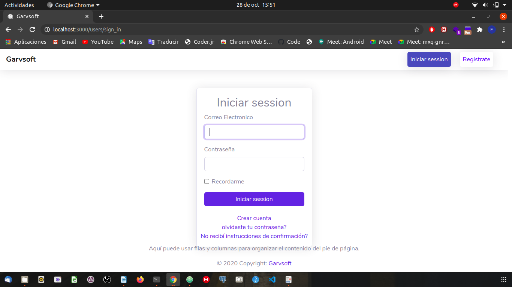
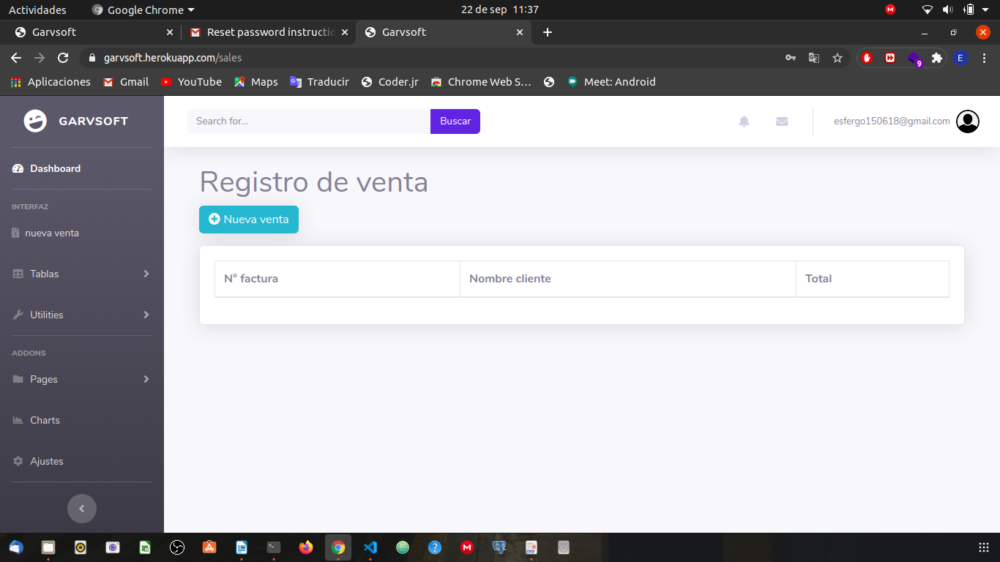
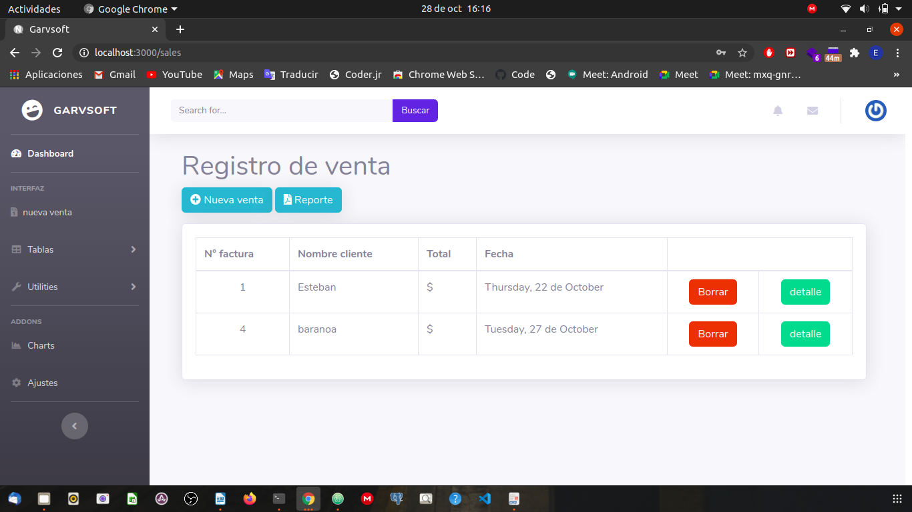
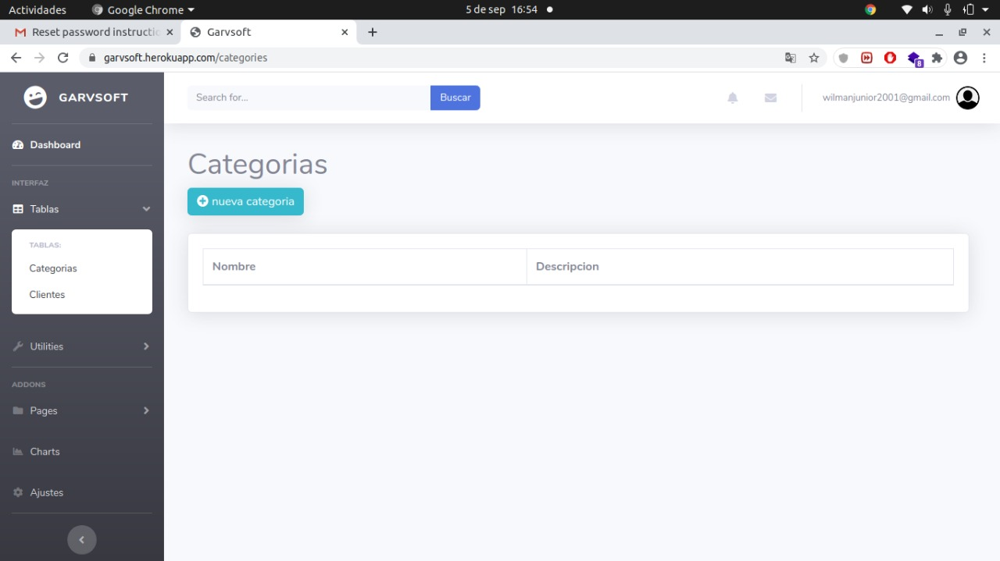
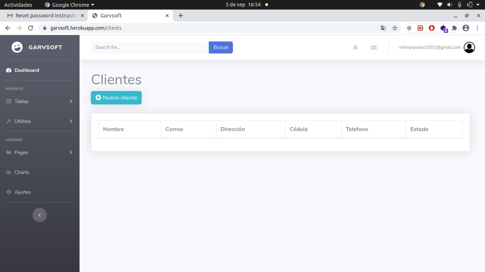
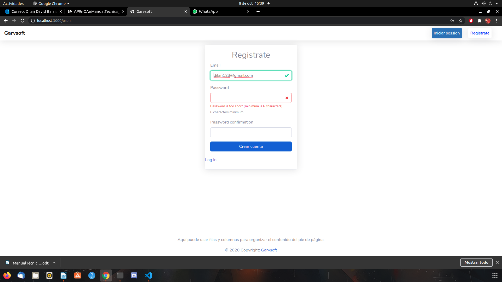
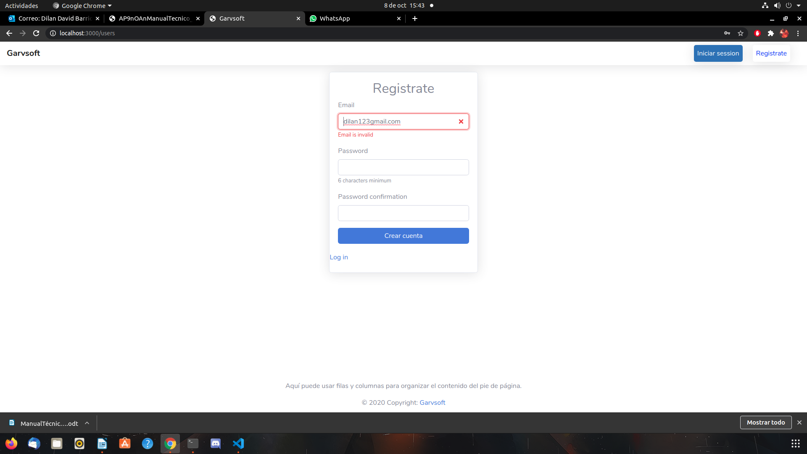
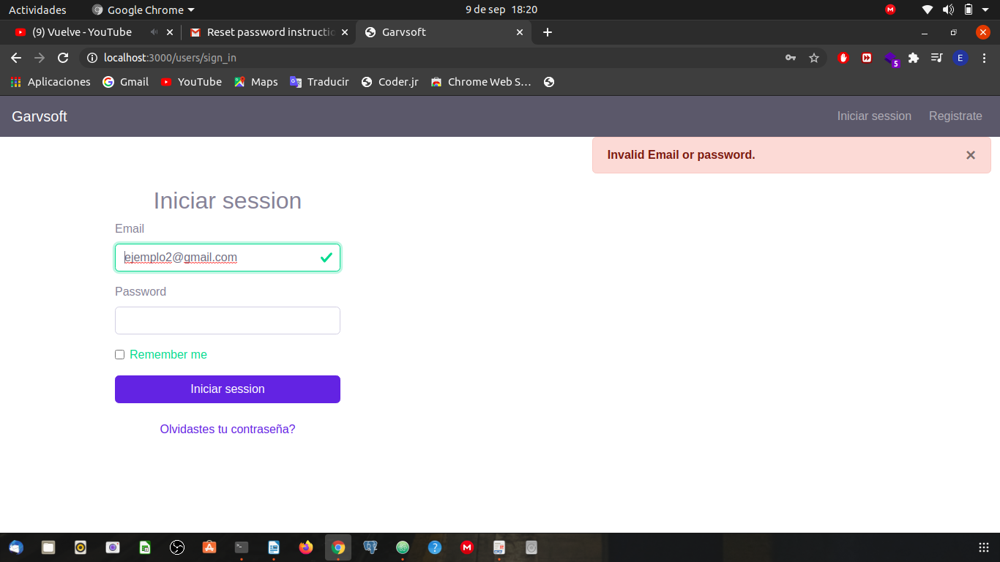

MANUAL DE USUARIO
DESARROLLO E IMPLEMENTACIÓN DEL APLICATIVO GESTIÓN ADMINISTRATIVA PARA EL REGISTRO DE VENTAS (GarvSoft)
ESTEBAN GÓMEZ FERNÁNDEZ
WILMAN ORELLANO HEREDIA
HÉCTOR BILBAO TORRENEGRA
ANDRÉS RODRÍGUEZ VARGAS
RODRIGO MUÑOZ ALVAREZ
CENTRO INDUSTRIAL Y DE AVIACIÓN.
SECCIONAL ATLÁNTICO.
ANÁLISIS Y DESARROLLO DE SISTEMAS DE INFORMACIÓN.
2020
ALCANSE
Este proyecto consistirá en desarrollar un aplicativo web basados en el punto de venta y modulo post del restaurante, que permitirá llevar una mejor organización sobre el registro de ventas que se hacen, así el administrador y empleado en especifico podrán tener registros de la venta diaria con sus respectivas fechas y pedidos hechos por los clientes. También incluirá:
REQUISITOS DE CONOCIMIENTOS PARA MANEJAR EL SISTEMA
Para el uso correcto del aplicativo, el usuario deberá tener en cuenta los siguientes conocimientos generales informáticos para una mejor experiencia en su uso. Estos son:
REQUISITOS DE HARDWARE
REQUISITOS DE SOFTWARE
POLÍTICAS DE SEGURIDAD
La empresa GARVSOFT cuenta con una política de seguridad que debe cumplirse de manera correcta para no cometer infracciones o faltas al momento de usar el aplicativo, tales como:
Empleado
- Uso correcto del aplicativo web al realizar ventas
- Manejo correcto del roll que se le asigna a cada empleado
- Colocar contraseñas fuertes al crearse la cuenta
- No compartir cuentas
- No compartir contraseñas
- No compartir datos de algún cliente con otro empleado
Gerente
- No divulgar la información personal de los clientes guardados en el aplicativo
INGRESO AL SISTEMA
En este formulario muestra la vista login (url:garvsoft.herokuapp.com/users/sign_in), dentro se encuentran los diferentes campos los cuales contendrán la información que ingresará el usuario para posteriormente acceder al aplicativo. El mismo sistema detectará que rol tiene asignado ese usaurio.
MAPA DE NAVEGACIÓN
En esta imagen mostramos la interfaz de la venta como tal donde el empleado podrá ingresar los datos necesarios para gestionar la venta la cual es solicitada por parte del cliente.

E esta vista podrá crear nuevas ventas, sacar el reporte de las ventas que se han hecho, ver el detalle de cada venta realizada.

También el empleado podrá cancelar la venta en caso de ya no sea necesario gestionar el pedido

Vista principal donde se mostrarán todos las categorias que el usuario desee crear

Vista principal en el cual se mostrarán todos los usuario que el usuario cree
INFORMACIÓN SOBRE LA MESA DE AYUDA
Los usuarios líderes que formarán la mesa de ayuda seremos los desarrolladores, ya que cada uno está en las condiciones para dar solución a algún problema que se presente con el aplicativo, dándole el usuario uso al mismo. Es por ello, que se deberá ir a la mesa de ayuda siempre y cuando un proceso dentro de la app, sea complicado o poco intuitivo, esos casos serán:
- Crear los platos dentro una categoría (el usuario se pierda en su ruta)
- Creación de una categoría (al llenar los datos, ingrese alguno que el sistema no esté permitido para ese modulo)
- Creación de un cliente (al llenar los datos, ingrese alguno que el sistema no esté permitido para ese modulo)
DESCRIPCIÓN DE LOS MENSAJES DE ERROR
Este error de debe a que el usuario debe ingresar una contraseña mayor o igual a 6 dígitos, sino es así el sistema no le permite crear la cuenta y por ende, le indica cuántos caracteres debe ingresar para crear la cuenta de manera efectiva.

Este error se produce por algún error alfanúmerico por parte del usuario, al ingresar su correo electrónico.

Este error se produce ya sea porque el correo o contraseña que ingresa el usuario no coincide con los que el sistema tiene guardados.